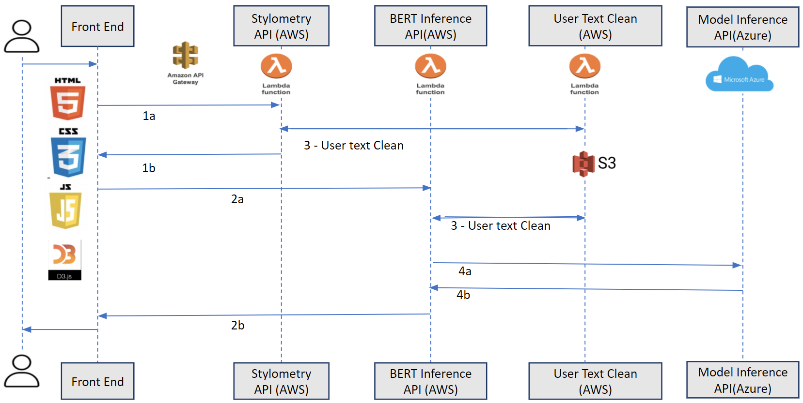
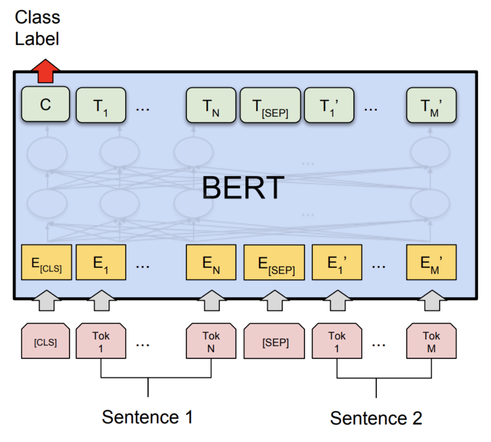

About
Writing is a vital skill. Unfortunately, it's difficult to apply the best pedagogical practices identified in other fields to writing [1].
In particular, writing is often not conducive to "deliberate practice" (DP), which is seen in the skill development literature as a particularly
efficient path to mastery in domains as diverse as chess, athletics, and even creative fields like music [2]. DP is characterized by instant feedback,
clear targets, and hyper-focused reflection on the exact nature of errors. All of those are challenging to provide in the writing context: papers can
take weeks to grade, the goal of "good writing" is hazy at best, and without a clear sense of their target, students can't possibly reflect on errors
at the resolution that DP demands.
To help make writing practice more rigorous and more scalable, EssAI uses machine learning to streamline and modernize some classic exercises [3] in writing
pedagogy that lend themselves to deliberate practice.
"This tool has the potential to be a more valuable resource to students of creative writing than any given assignment or exercise I've seen currently circulated at the undergraduate level.”
- Audrey Greathouse, Novelist & Writing Instructor
[1] Kellogg, R.T., Raulerson, B.A. Improving the writing skills of college students. Psychonomic Bulletin & Review 14, 237–242 (2007).
https://doi.org/10.3758/BF03194058
[2] Ericsson, K. A., Krampe, R. T., & Tesch-Römer, C. (1993). The role of deliberate practice in the acquisition of expert performance.
Psychological Review, 100(3), 363-406. doi:10.1037/0033-295X.100.3.363
[3] Edward P. J. Corbett. “The Theory and Practice of Imitation in Classical Rhetoric.” College Composition and Communication, vol. 22,
no. 3, 1971, pp. 243–250. JSTOR, www.jstor.org/stable/356450. Accessed 14 Apr. 2021.
Details
- Solution Overview
Users will first type in paragraphs to be evaluated and select the author to compare with. EssAI will clean the input texts and split them into sentence-level for BERT evaluation, which will return classification probabilities. Users will see color-coded sentences based on probabilities. Meanwhile, EssAI will also calculate values for the top five most important metrics for the target author as supportive feedback for potential improvement.
If users want deliberate practice before the evaluation, EssAI also provides an environment for sentence-by-sentence imitation where users will select a sample paragraph from the author, take notes, blur the original sentences, and try to rewrite the sentence. Popular stylometric metrics based on user feedback[1] will also be calculated for each sentence.
- System Architecture

There are two major UIs for our project - one Google Doc Adds-on for BERT evaluation and another adds-on option for sentence-level deliberate practice.
We deployed the data manipulation pipelines in AWS Lambda, used Google Colab and Azure Machine Learning Service (AML) to train and track models, and deployed a real-time inference endpoint for each author on Azure Kubernetes Services (AKS) with GPU. Depending on the frontend request, Lambda will either return stylometric metrics calculation or trigger BERT inference.
Due to cost management, we paused our AKS cluster most of the time. If you want to have a demo, please contact us.
- Model Architecture - BERT

Bidirectional Encoder Representations from Transformers (BERT) is published by Google AI in 2017, with application of the bidirectional training of Transformer, a popular attention model, to language modelling [2]. By using a masked language model, it is now possible to learn the context of each word from the words appearing both before and after it.
We used the pre-trained BERT model (BERT-base) with 12-layer, 768-hidden, 12-heads, 110M parameters that was trained on English text using 3.3 Billion words total [3]. We freezed the entire architecture and attached a dense layer and a softmax layer to the architecture as fine-tuning for classification.
Additionally, to understand better of how BERT explains the style classification, instead of a blackbox, we used an open-source interpretability library - interpret-text [4]. The advantage is being able to visualize word-level local feature importances to see what brings positive importance to the classification of the texts. However, as an overhead, the library required to use its own BERT wrapper (over Hugging Face implementation) which restricts some tuning opportunities.
We mostly followed the BertAA: BERT fine-tuning for Authorship Attribution[5] implementation. One difference we made is that instead of all authors being in one BERT model, we separate each write for one model. Because our users would not care how similar they are to another writer, and the BERT model should serve its purpose to identify similarity to the one target author selected.
- Model Evaluation
We use classification accuracy as the evaluation metric. Different authors have very distinctive accuracies. We are able to reach 99.1% for Jane Austen and 95.4% for Mark Twain. For Scott Fitzgerald and Charles Dickens, we ended at 60.3% and 72.6%.
To enhance the accuracy, we first tried to expand the datasets. Since we trained one BERT model for each author, each can have its own dataset. Thus, we included various other random authors’ books, which helped BERT identify Mark Twain better. We also tuned several hyper-parameters such as epochs, batch size, and max token lengths, but they only enhanced the accuracy a little. Unfortunately with the limitation of the BERT wrapper we implemented with interpret-text, there are only few tuning parameters available. Moreover, we tried to use stylometric metric values as proxies for representing the text style, and see if a simple logistic regression can be a good model. We did not see much benefit out of the base model on the sentence level classification.
For the test dataset, we used blog corpus [6] to see how “common” our BERT models would mark one blog as having similar style to these authors. It should not identify the majority as positive with high probability. The BERT models for Jane Austen and Mark Twain matched our assumption, but the other two did not.
With concerns of Scott Fitzgerald and Charles Dickens accuracies and potential misleading results, we decided to restrict our scope to be Jane Austen and Mark Twain for our MVP.
- Model Future Development
By running the AutoML pipelines with BERT for Scott Fitzgerald and Charles Dickens, we see models can reach 99.18% and 97.56% respectively with the existing datasets. The limitation might come from our BERT wrapper with interpret-text. Future development can look at implementing with Hugging Face models with more tuning opportunities.
Additionally, it will be interesting to see a combination of BERT text inputs and stylometric values into one logistic regression to see if it helps capture the writing style better.
- References
[1] https://github.com/Hassaan-Elahi/Writing-Styles-Classification-Using-Stylometric-Analysis
[2] https://towardsdatascience.com/bert-explained-state-of-the-art-language-model-for-nlp-f8b21a9b6270
[3] https://arxiv.org/pdf/1706.03762.pdf
[4] https://github.com/interpretml/interpret-text
[5] http://publications.idiap.ch/downloads/papers/2020/Fabien_ICON2020_2020.pdf
[6] https://u.cs.biu.ac.il/~koppel/BlogCorpus.htm